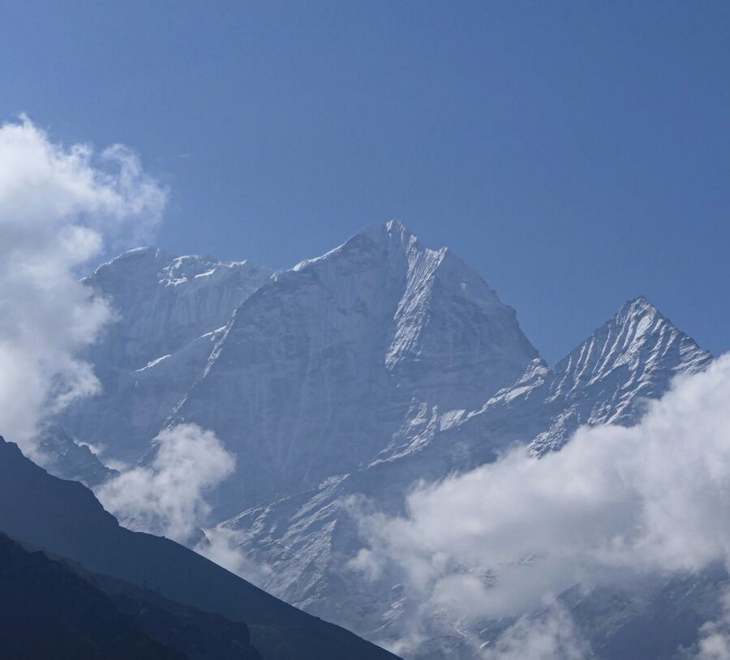
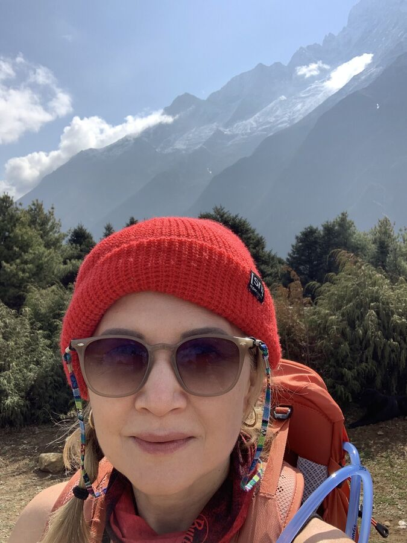
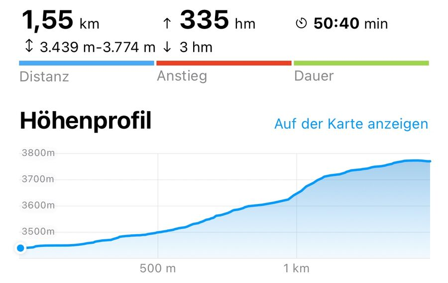
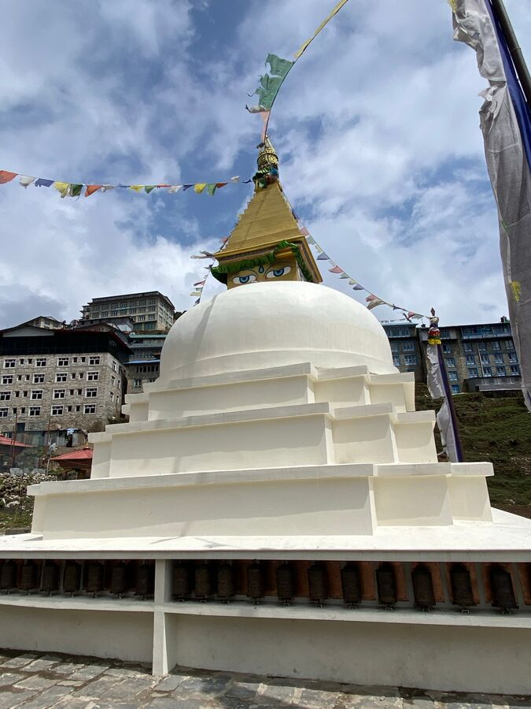
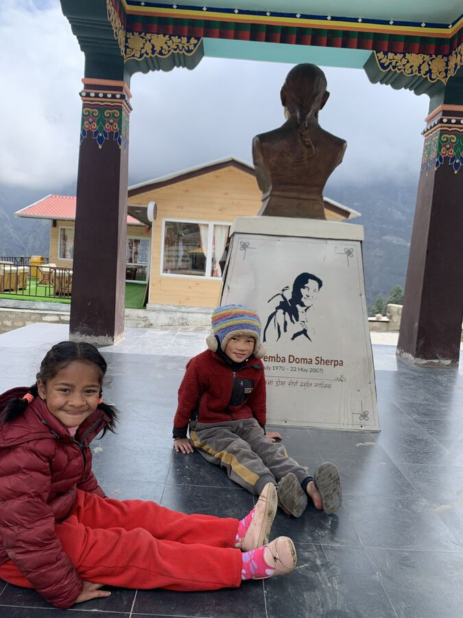
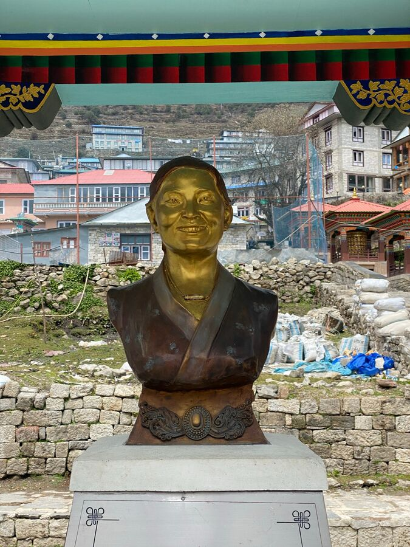
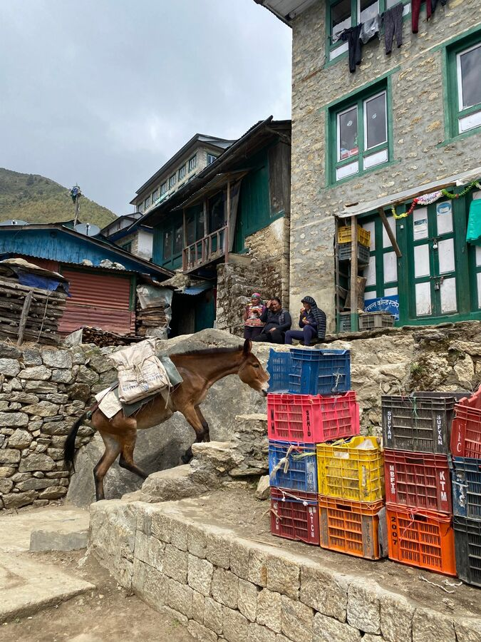
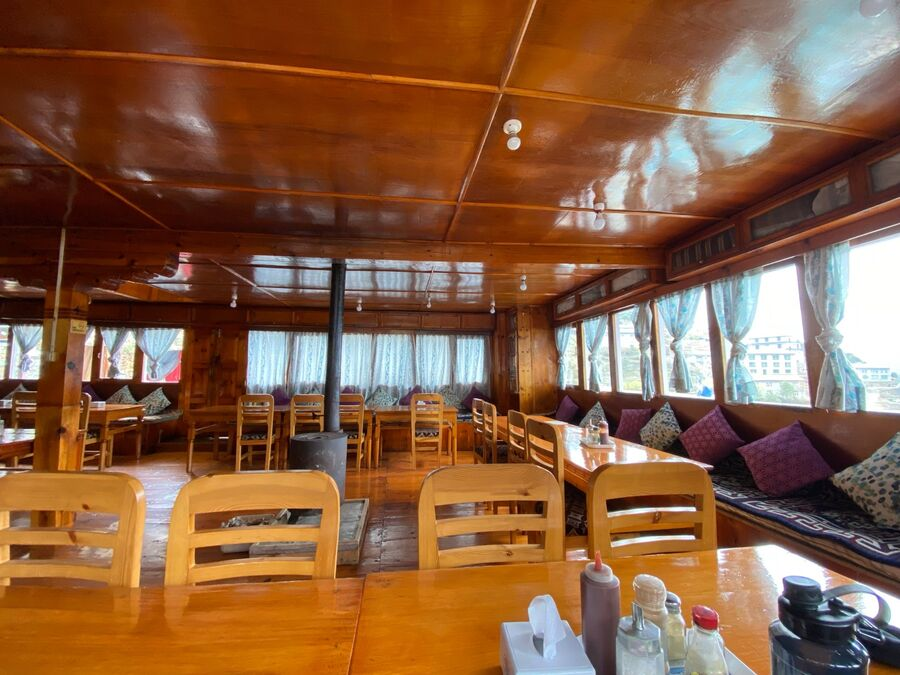
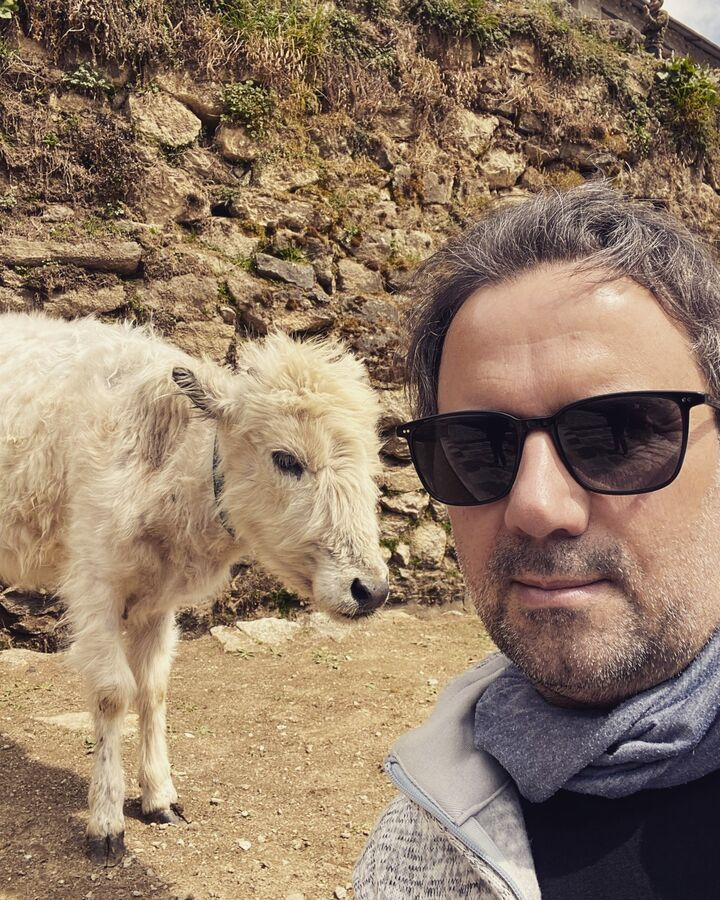

Hiç inkâr etmiyorum: Trekkingi seviyorum, ama bana kalsa ne donma noktasının biraz üzerinde cereyanlı, ısıtılmamış bir odada ne de bir çadırda gecelemem gerekir. Maalesef bu çoğu zaman işin bir parçası. Bu sefer de uyku tulumlarımıza girmek zorunda kaldık. Hemen söyleyeyim: İkimiz de neredeyse hiç uyumadık.
Önce çok soğuktu. Sonra çok sıcak. İyi bir uyku pozisyonu bulamıyorsunuz, çünkü uyku tulumu ayaklara doğru daralıyor ve alıştığınız pozisyonları imkânsız kılıyor. Sonra elbette gece tuvalete gitmeniz gerekiyor, çünkü bütün gün ve akşam bol su içiyorsunuz. Yani sıcak tulumdan çıkıp buz gibi banyoya. Bu arada tulum yeniden soğuyor. Ve bunların hepsi başınızda zayıf bir kafa lambasıyla.
Gece 6:30 civarında sona erdi. Sonra soğuk odada tazelenmek, giyinmek ve kahvaltı. Bugün French toast ve omlet.

Saat 8'de aklimatizasyon yürüyüşümüze çıktık. Hedef, Syangboche'de yaklaşık 3.800 m'deki bir seyir noktasıydı. Hava bu kadar bulutlu olmasaydı oradan Everest'i ikinci kez görme şansımız da olurdu. Phakding – Namche Bazaar yolundaki bir seyir noktasından ilk bakış da bir gün önce maalesef bulutlar yüzünden bize nasip olmamıştı.
Ama en azından yakındaki diğer dağları görebildik, örneğin 6.608 m yüksekliğindeki Thamserku'yu.

Yolun kendisi yine epey yorucuydu. Taşlı „merdivenler“, elbette her birinin basamak yüksekliği farklı, bizi çabucak nefes nefese bıraktı. Daha yukarıda yol daha çok kumluydu ya da alçak otlarla kaplıydı. Orada yürümek daha kolaydı, üstelik eğim de artık o kadar dik değildi.


Toplamda bugün 330 metre tırmandık ve aynı mesafeyi geri indik. Bu, vücudun seyrek havaya yavaş yavaş alışması ve yükseklik hastalığına yakalanmamamız için önemli. Çünkü bu hastalık hayati tehlike yaratabilir.
Sonraki duraklarımızda 3.700 m, 4.400 m, 4.800 m ve 5.200 m'de uyuyacağız. 4.400 m'de ikinci aklimatizasyon günü var.
Bugünkü zorunlu gezimiz yaklaşık 3 saat sonra, saat 11 civarında bitti. Sonra günün en güzel anı geldi: duş. Bizim için bu kadar sıradan bir şeye insan nasıl da gerçekten sevinebiliyor. Su güneş panelleri sayesinde yeterince sıcaktı. Soğuk banyo ve alışık olmadığımız mikrofiber havlu bile sevincimizi azaltamadı. Sonra hemen iç çamaşırlarımızı yıkayıp dışarıda kurumaya astık. Yolculuktan önceki son gün aldığım çamaşır ipi bu arada seyahatin gizli yıldızı oldu.
Lodge'da öğle yemeğinden (pizza ve makarna) sonra aşağı, kasabaya indik. Çünkü lodge'umuz „Namche Guest House“ Namche Bazaar'ın neredeyse en tepesinde.
Ana caddeden kasaba girişine, neredeyse en aşağıya kadar yürüdük, orada „stupa“ya ve bir anıta baktık.
Stupa, içinde örneğin kutsal emanetler bulunan bir Budist anıtı. Namche Bazaar'daki stupanın dış yüzlerinde 8 x 12 küçük dua çarkı var.

Hemen yanına dikilen anıt, Everest'e çıkan ilk Nepalli kadın olan merhum Pemba Doma Sherpa'yı anıyor. Dağa iki kez çıkan iki kadından biri. 2007'de 8.516 m yüksekliğindeki Lhotse'ye tırmanırken maalesef hayatını kaybetti. Daha 36 yaşındaydı.


Yürüyüşümüz bizi bazı dükkânların önünden geçirdi, oradan ufak tefek şeyler aldık. Ayrıca Namche Bazaar'ın meşhur olduğu, ama maalesef sadece cuma günleri kurulan haftalık pazara da baktık.
Kasabanın her yerinde hayvanlarla karşılaşıyorsunuz. Sokak aralarında köpekler dolaşıyor, özellikle de çok genç olanlar. Sonra çoğu zaman kasabada dolaşan tavuklar ya da inekler var. Ve elbette eşekler, ama onlar yük taşıyor.

Bir kafenin güneşli terasında kısa bir kahve molasından sonra lodge'umuza tekrar çıktık.
Öğleden sonranın geri kalanı sakin geçti. Önümüzdeki günler için güç toplamak istedik. Sobanın etrafındaki misafir salonunda oturduk ve sonra akşam yemeğimizi yedik (vejetaryen pilav, sahanda yumurtalı kızarmış patates, dal bhat).

Şimdi, saat 21'de, uyuyacağız. Alarm 6:30'da çalacak. İyi geceler.
